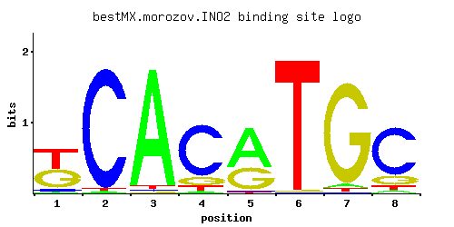

INO2
YDR123C, SCS1, DIE1
Component of the heteromeric Ino2p/Ino4p basic helix-loop-helix transcription activator that binds inositol/choline-responsive elements (ICREs), required for derepression of phospholipid biosynthetic genes in response to inositol depletion
Best-performing DNA-binding model.

View and copy the recommended matrices ↘
A | 0.023 0.015 0.959 0.025 0.623 0.003 0.037 0.038 C | 0.064 0.966 0.014 0.773 0.014 0.006 0.007 0.757 G | 0.446 0.003 0.006 0.131 0.351 0.009 0.927 0.150 T | 0.467 0.015 0.021 0.071 0.013 0.981 0.029 0.054
A | 2 1 95 2 62 0 3 3 C | 6 96 1 77 1 0 0 75 G | 44 0 0 13 35 0 92 15 T | 46 1 2 7 1 98 2 5
A | -2.63 -3.06 1.10 -2.55 0.67 -4.67 -2.16 -2.13 C | -1.03 1.68 -2.55 1.46 -2.55 -3.40 -3.25 1.44 G | 0.91 -4.09 -3.40 -0.32 0.67 -3.00 1.64 -0.18 T | 0.38 -3.06 -2.72 -1.51 -3.20 1.12 -2.40 -1.78
Alternative candidate matrices 4
Historical matrix candidates from the original ScerTF database. Expand a source to inspect its original logo, scores, and matrix values.
INO2Foat et. al.P = 3.41e-19View matrix ↘
INO2Harbison et. al.P = 1.42e-17View matrix ↘
INO2Macisaac et. alP = 1.95e-17View matrix ↘
INO2Pachkov et alP = 1.52e-15View matrix ↘
Gene-level annotations and interactions.
Genes bound in ChIP-chip experiments 114 genes
YAL048C, YAL053W, YAL054C, YBL106C, YBR029C, YBR030W, YBR032W, YBR050C, YBR083W, YCR057C, YCR092C, YCR093W, YCR098C, YDL049C, YDL080C, YDR050C, YDR072C, YDR073W, YDR123C, YDR124W, YDR129C, YDR146C, YDR147W, YDR169C, YDR274C, YDR275W, YDR278C, YDR289C, YDR312W, YDR345C, YDR428C, YDR497C, YDR521W, YER033C, YER034W, YER043C, YER091C, YER092W, YGR050C, YGR157W, YGR238C, YGR253C, YHL020C, YHR082C, YHR083W, YJL048C, YJL117W, YJL119C, YJL140W, YJL141C, YJL142C, YJL149W, YJL150W, YJL151C, YJL152W, YJL153C, YJR073C, YJR074W, YJR104C, YJR105W, YKL060C, YKL079W, YKL081W, YKL082C, YKL182W, YKR037C, YLR034C, YLR168C, YLR169W, YLR171W, YLR229C, YLR347C, YLR349W, YLR447C, YLR448W, YML075C, YML096W, YML097C, YMR010W, YMR070W, YNL043C, YNL044W, YNL080C, YNL103W, YNL104C, YNL117W, YNL118C, YNL129W, YNL130C, YNL169C, YNL171C, YNL175C, YNL178W, YNL277W, YNL306W, YNL307C, YNR016C, YNR017W, YOL087C, YOL146W, YOL147C, YOR032C, YOR097C, YOR211C, YOR212W, YOR230W, YOR234C, YOR316C, YOR317W, YPL018W, YPL019C, YPL231W, YPL254W, YPR035W
Genes affected by TF deletion 62 genes
YKL043W, YPL021W, YPL240C, YNL210W, YPL016W, YDR527W, YOR317W, YBR093C, YBR129C, YOL107W, YDR281C, YLR155C, YLR157C, YCR050C, YDR438W, YAL043C, YDL134C, YOR043W, YMR023C, YMR171C, YBR134W, YIR042C, YLR158C, YBR101C, YFL016C, YNL184C, YOR298C-A, YAR071W, YGL248W, YHR007C, YLR260W, YML130C, YNL064C, YDR209C, YKL120W, YHR067W, YHR219W, YLR168C, YKL027W, YLL012W, YMR067C, YBR185C, YHR138C, YJL079C, YOR027W, YGL255W, YLR302C, YMR066W, YOR218C, YJL076W, YLR049C, YOR090C, YPL075W, YMR126C, YBL051C, YDR123C, YFL068W, YNL170W, YOL101C, YOR306C, YNL007C, YNL324W
Genes supported by both experiments 3 genes
YDR123C, YLR168C, YOR317W
Predicted TF–TF partners 3 genes
CBF1, TYE7, YAP7